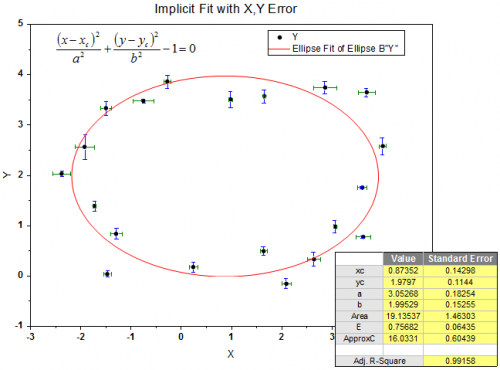

Nichtlineare implizite Kurvenanpassung (nur OriginPro)
Fitting-Implicit
Origins NLFit-Hilfsmittel unterstützt die implizite Anpassung mit Hilfe des Algorithmus der orthogonalen Distanzregression (ODR), einschließlich der Anpassung mit X- und/oder Y-Fehlerdaten.

Um Ihre Daten mit impliziten Anpassungsfunktionen anzupassen, können Sie die Standardfunktionen der nichtlinearen impliziten Kurvenanpassung verwenden oder Ihre eigenen impliziten Anpassungsfunktionen erstellen.
Mit impliziten Funktionen anpassen
Um eine implizite Funktion anzupassen,
- wählen Sie im Menü Analyse: Anpassen: Nichtlineare implizite Kurvenanpassung, um den Dialog zu öffnen.
- Wählen Sie eine Funktion in der Kategorie Implicit.
| Hinweise: Implizite Anpassungsfunktionen verwenden die orthogonale Distanzregression. |
/Tutorial_icon.png) |
Mini-Tutorial: Anpassung für Ellipse
- Importieren Sie die Datei Ellipse.dat als einzelne ASCII-Datei. Sie finden sie unter \Samples\Curve Fitting.
- Markieren Sie Spalte A und B und wählen Sie Analyse: Anpassen: Nichtlineare implizite Kurvenanpassung, um den Dialog NLFit zu öffnen.
- Wählen Sie Ellipse als Funktionstyp.
- Gehen Sie zur "Datenauswahl" und stellen Sie sicher, dass "Einstellung für jeden Bereich verwenden" unter Gewichtung gewählt ist.
- Erweitern Sie in "Datenauswahl" den Zweig "Eingabe" und dann "Bereich 1".
- Wählen Sie im Zweig "X" die Option "Beliebiger Datensatz" für Gewichtung und die Spalte C(Weight X) als Datensatz.
- Tun Sie fast das Gleiche mit "Y". Wählen Sie nur dieses Mal die Spalte D(Weight Y) als Datensatz.
- Klicken Sie auf "Fit", um die Daten anzupassen und das Berichtsblatt zu erzeugen.
|
Implizite Anpassung mit mehr als zwei Variablen
Bitte beachten Sie Folgendes, wenn Sie die implizite Anpassung mit mehr als 2 unabhängigen Variablen ausführen:
- Ihre Eingabedaten müssen Arbeitsblattdaten sein, d.h., Sie können die Anpassung in diesem Fall nicht von einer Datenzeichnung aus ausführen.
- Nur der Datentyp Angepasster Punkt für Eingabedaten wird für alle Variablen unterstützt. Um diese Einstellung in dem Dialog NLFit zu modifizieren, wechseln Sie zur Registerkarte Einstellungen und wählen Sie Angepasste Kurven. Erweitern Sie den Zweig Angepasstes Kurvendiagramm und setzen Sie den Datentyp der Variable auf Angepasster Punkt für Eingabedaten.
- Die automatische Erzeugung einer angepassten Kurve wird nicht unterstützt. Allerdings könnten Sie die Daten für die angepasste Kurve im Berichtsblatt erhalten.
Eine benutzerdefinierte implizite Anpassungsfunktion erstellen
Um Ihre eigene implizite Anpassungsfunktion zu erstellen, müssen Sie zuerst den Dialog Fitfunktionen erstellen aufrufen, entweder indem Sie:
- im Menü Analyse: Anpassen: Nichtlineare implizite Kurvenanpassung auswählen, um den Dialog NLFit zu öffnen.
- im Auswahlmenü von Funktion die Option <Neu...> wählen.
oder
Wählen Sie Hilfsmittel: Fitfunktionen erstellen oder drücken Sie auf F8.
Wenn der Dialog Fitfunktionen erstellen geöffnet ist,
- Wählen Sie die Option Eine neue Funktion erstellen und klicken Sie auf Weiter.
- Wählen Sie die Option Implizit unter Funktionsmodell.
oder
- Wählen Sie Hilfsmittel: Fitfunktionen verwalten im Menü (oder drücken Sie F9), um den Dialog Fitfunktionen verwalten zu öffnen.
- Erstellen Sie eine neue Funktion in der Kategorie Implicit.
Beachten Sie, dass Sie nur die implizite Anpassung mit Funktionen der Kategorie Implicit durchführen können. Sie müssen also jede erstellte implizite Funktion in die Kategorie Implicit im Dialog Fitfunktionen verwalten verschieben.
Lesen Sie in der Origin-Hilfe nach, wie Sie eine benutzerdefinierte Anpassungsfunktion definieren.
|
Dies ist ein kurzes Tutorial, das Ihnen zeigt, wie Sie eine benutzerdefinierte implizite Anpassungsfunktion erstellen und Daten mit ihr anpassen.
- Wählen Sie Hilfsmittel: Fitfunktionen verwalten im Menü oder drücken Sie F9, um den Dialog Fitfunktionen verwalten zu öffnen.
- Wählen Sie die Kategorie Implicit und klicken Sie auf die Schaltfläche Neue Funktion.
- Geben Sie Hyperbolic als Funktionsname ein und setzen Sie das Funktionsmodell auf Implizit und die Funktionsform auf Equations (Gleichungen).
- Geben Sie x,y im Feld Variablen sowie a, b, c, d, e im Feld Parameter ein.
- Geben Sie Folgendes im Funktionskörper ein:
f=a*x^2+b*x*y+c*y^2+d*x+e*y-1;
Beachten Sie, dass der Wert f auf 0 geschätzt wird.
- Klicken Sie auf Speichern, um die Funktion zu speichern, und klicken Sie auf OK, um den Dialog zu schließen.
- Bereiten Sie einige Testdaten vor, die einem hyperbolischen Trend folgen, und importieren Sie sie in Origin. Sie können die Schaltfläche Simulieren im Dialog Fitfunktionen verwalten, um Daten mit hinzugefügtem Rauschen zu erzeugen.
- Legen Sie Spalte A als X fest und Spalte B als Y.
- Markieren Sie Spalte A und B und wählen Sie Analyse: Anpassen: Nichtlineare implizite Kurvenanpassung, um den Dialog NLFit zu öffnen.
- Wählen Sie im Menü Funktionsauswahl die Option Hyperbolisch(User) und klicken Sie auf Fit.
|
| Hinweis: Die Anpassung mit einer benutzerdefinierten Funktion erfordert eine Parameterinitialisierung. Ein Wert von 1 für jeden Parameter sollte für eine hyperbolische Funktion ausreichen. |